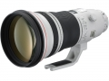

器材库 > 35mm画幅AF定焦镜头 > EF 400/2.8L IS II USM

详细规格
镜头类型
超远摄镜头
发布日期
2010-08-26
厂家推荐价格
1,312,500.00 （日元）
焦距
400mm
最大光圈
f/2.8
最小光圈
f/32
视角（对角）
6.17
镜头结构
16片/12组
光圈叶片
9片
最近对焦距离
270cm
最大放大倍率
0.17倍
驱动马达
USM（超声波马达）
滤镜口径
52mm
镜头卡口
Canon EF
防抖
是
颜色
白色
尺寸
163×343mm
重量
3850g
hjcbq5012015-10-26 08:254.92 分
操作性 5.00耐用性 5.00性价比 4.50解像力 5.00色彩还原 5.00机械结构 5.00
枫叶枫叶2015-09-02 14:494.5 分
操作性 4.50耐用性 4.50性价比 3.50解像力 5.00色彩还原 5.00机械结构 4.50
枫叶枫叶2015-09-02 14:39

枫叶枫叶2015-07-08 13:15
wangh88882014-07-21 09:585 分
操作性 5.00耐用性 5.00性价比 5.00解像力 5.00色彩还原 5.00机械结构 5.00
wangh88882013-04-23 21:42
arr102013-03-05 16:474.67 分
操作性 4.50耐用性 5.00性价比 4.00解像力 5.00色彩还原 4.50机械结构 5.00
EF135F22013-01-20 19:355 分
操作性 5.00耐用性 5.00性价比 5.00解像力 5.00色彩还原 5.00机械结构 5.00
chenaliu2012-09-11 07:534.83 分
操作性 5.00耐用性 5.00性价比 4.00解像力 5.00色彩还原 5.00机械结构 5.00
wmf1132012-08-11 13:134.83 分
操作性 5.00耐用性 5.00性价比 4.00解像力 5.00色彩还原 5.00机械结构 5.00
wangh88882012-07-02 20:23
该产品暂无存档的产品图
评测 / 相关文章
该产品暂无存档的评测文章
相关文章
- ［资讯］佳能2011年新款EF镜头推迟发售 （存档）
- ［资讯］佳能推迟三款镜头发售日期 （存档）
- ［资讯］佳能EF 400/2.8L IS II USM （原站已下线）